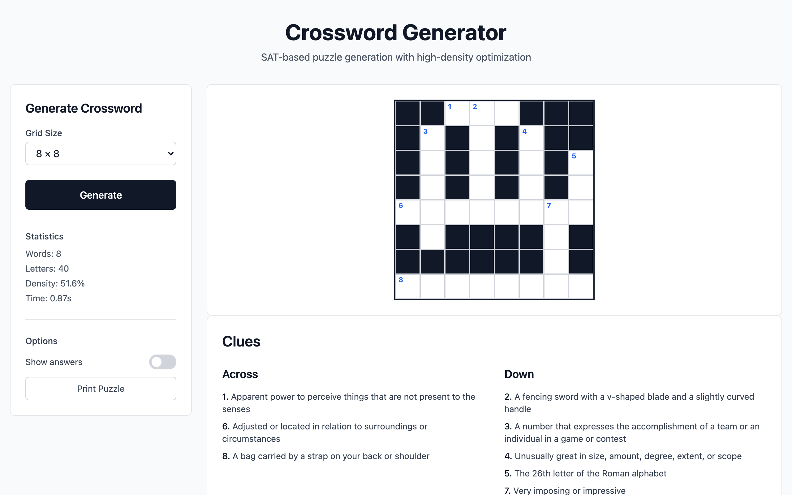

This project started because I noticed crossword puzzle books selling well on Amazon KDP and thought the whole process could be automated. Not just the puzzle generation, but the entire pipeline: valid high-density grids, clue extraction, page layout, front matter, covers, spine width calculation, print-ready PDF output. One command, one book.
The browser demo on GitHub Pages came later and is really a side effect. The primary output is a CLI tool that produces KDP-ready LaTeX books.
Why SAT solving

{kind=link}
I looked at existing open-source crossword generators before writing my own. Most of them use backtracking search: pick a word, place it, pick another, check if it fits, undo and retry when it doesn't. These generators work for small grids but they tend to get stuck in local optima, producing puzzles that are sparse and uneven. The grids have dead zones where no words interlock, and the word choices feel like afterthoughts jammed into remaining gaps.
Crossword construction is a constraint satisfaction problem. Every cell in the grid is a variable, every word placement creates a set of letter-equality constraints between intersecting slots, and the requirement that all words come from a valid dictionary constrains the domain of each variable. This maps naturally to Boolean satisfiability.
The encoder translates the grid dimensions, target density, and dictionary into a SAT formula. Varisat (a Rust SAT solver) processes the formula and either produces a valid assignment or reports unsatisfiability. When the density target is too aggressive for the available word list, the solver tells you instead of running forever, which is useful for parameter tuning. When it succeeds, the solution is guaranteed to satisfy all constraints simultaneously, so you never get partially valid grids.

{kind=link}
The book pipeline
The CLI generates complete LaTeX source for a KDP-ready puzzle book. Each puzzle is laid out on a spread: the grid appears on the left page, the clues on the right, with correct gutters and margins for print binding. Before the puzzles, the tool generates a title page with customizable author name, publisher, and description; a copyright page with ISBN and edition fields; and a table of contents.
Cover generation handles the most tedious part of KDP publishing. The tool calculates spine width from the page count and paper stock (color interior uses thicker paper, so the spine is wider for the same page count), renders an SVG template at the required trim dimensions, and outputs a print-ready cover. Supported trim sizes range from 5x8 to 8x10, covering the most common KDP paperback formats.
Rayon parallelizes the puzzle generation across all available CPU cores. On a modern machine, 100 puzzles at the default 16x16 grid size and 50% density takes about 5 to 10 minutes. Each puzzle uses a deterministic seed, so any individual result can be reproduced exactly. The --compile flag runs pdflatex automatically after LaTeX generation, producing the final PDF in one step.
The full set of CLI flags covers everything you need to go from nothing to a publishable book: -c for puzzle count, -s for grid size, --density for fill percentage, -t/-a/-p for title/author/publisher, --isbn and --copyright for legal fields, -j for thread count, --seed for reproducibility, and -o for output path.
Dictionary curation
I underestimated how much the word list matters. Early versions used an unfiltered dictionary, and the resulting puzzles contained medical abbreviations, archaic terms nobody would recognize, and occasionally offensive entries. A crossword is only as good as its vocabulary. The project now ships a curated allowlist derived from the WordSet project, filtered for common English words that a typical solver would know. The CLI also accepts custom allowlists, which is useful for themed books (animals, geography, sports) or for targeting a specific difficulty level by restricting vocabulary size.
One codebase, two targets
The core Rust library compiles to WebAssembly for the browser or to a native binary for the CLI, selected by a --features wasm flag during compilation. The encoder, solver integration, dictionary management, and solution representation are shared. The WASM target wraps the library for browser invocation; the native target adds the LaTeX generation, parallel processing, cover rendering, and pdflatex integration. Conditional compilation keeps the separation clean without duplicating logic.